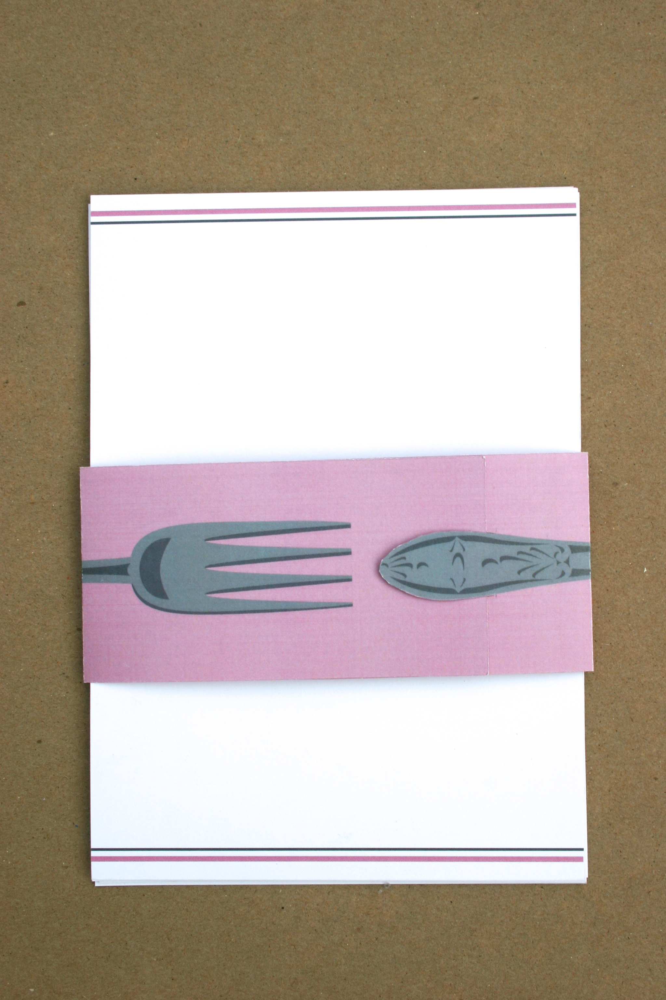
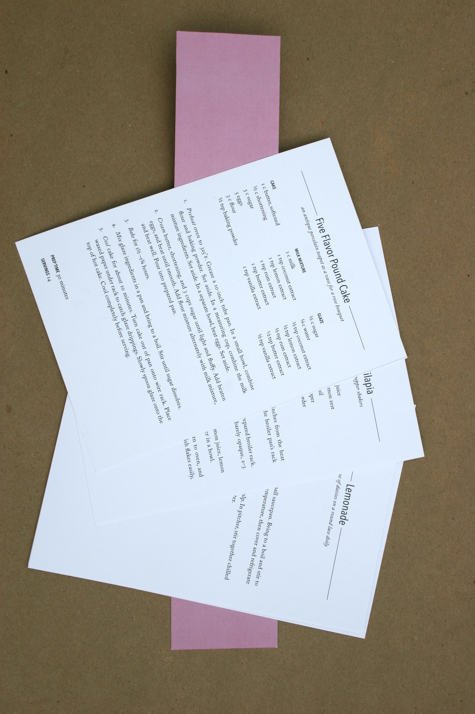
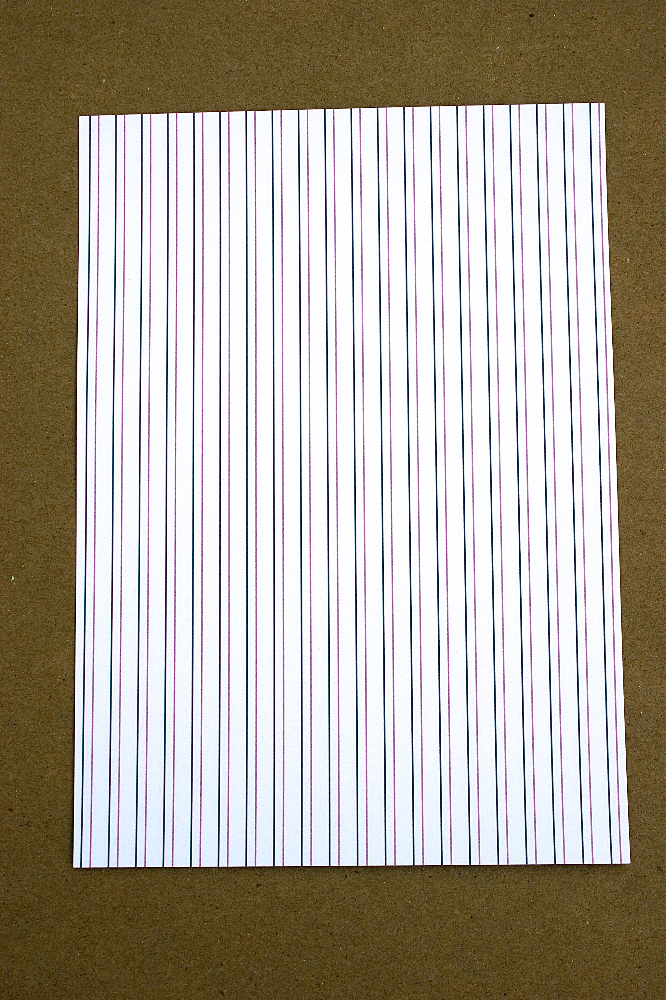
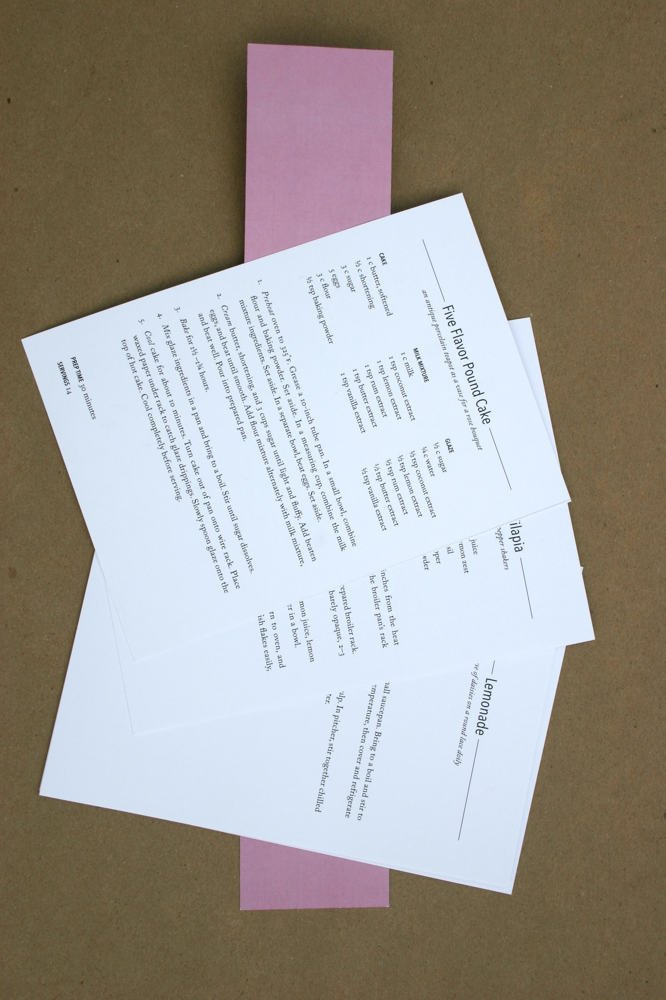
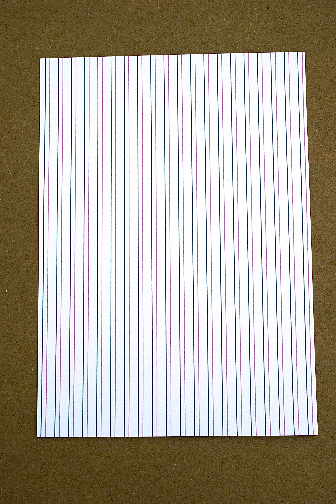
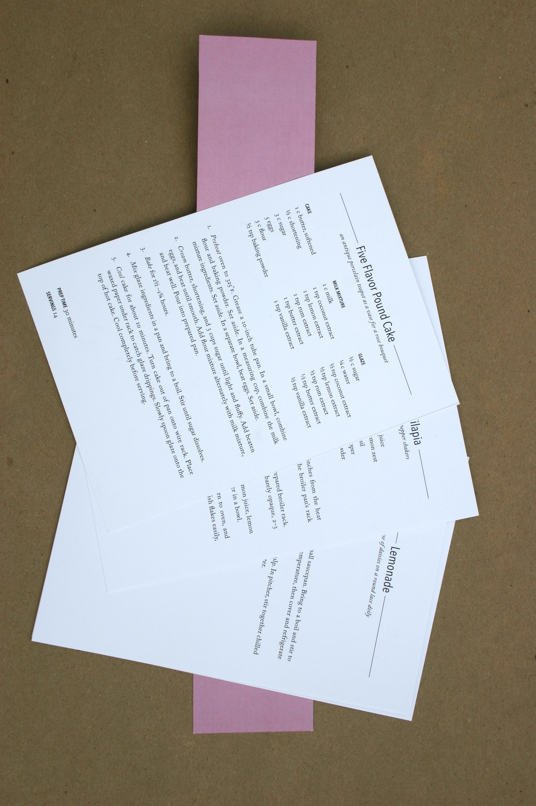
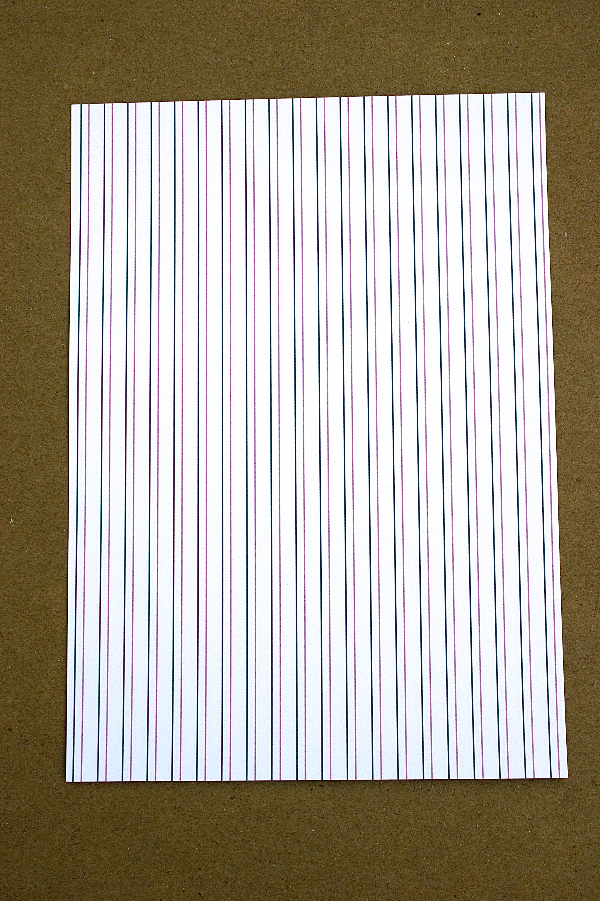
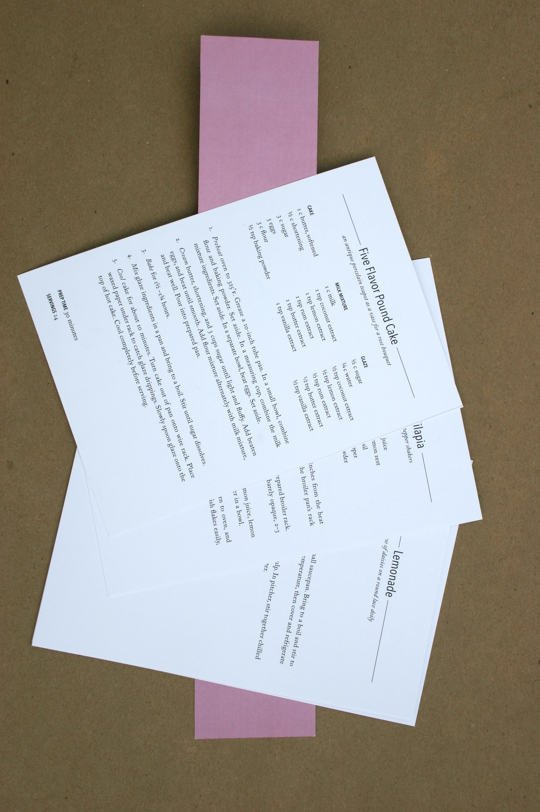
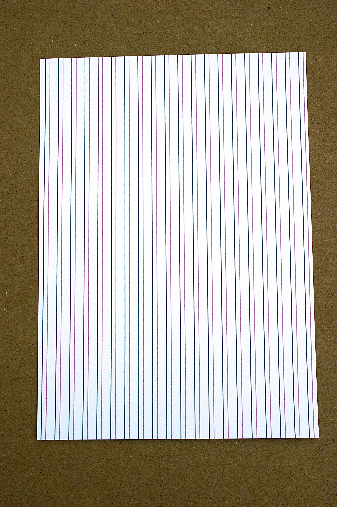

Lemon-Themed Recipe Cards

 



 



Using ten different recipes involving lemons as an ingredient, I designed a set of cards and a belly band in which to keep them. Each recipe includes a recommendation of a table centerpiece that would compliment the completed dish.